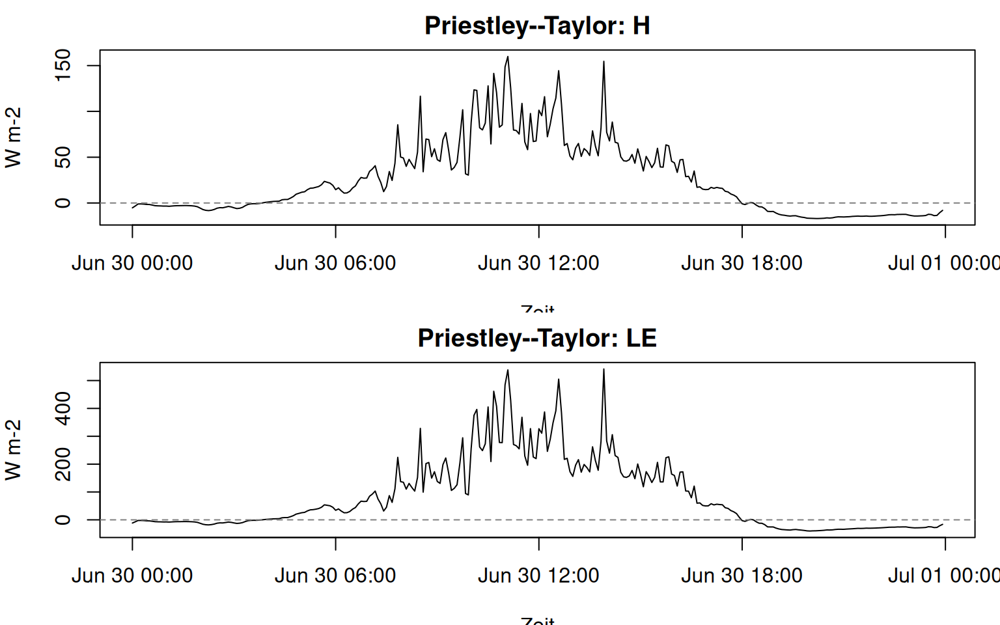
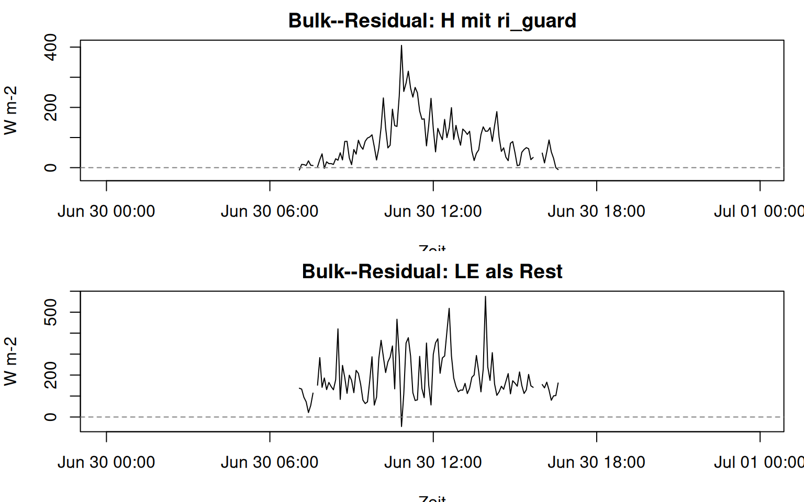
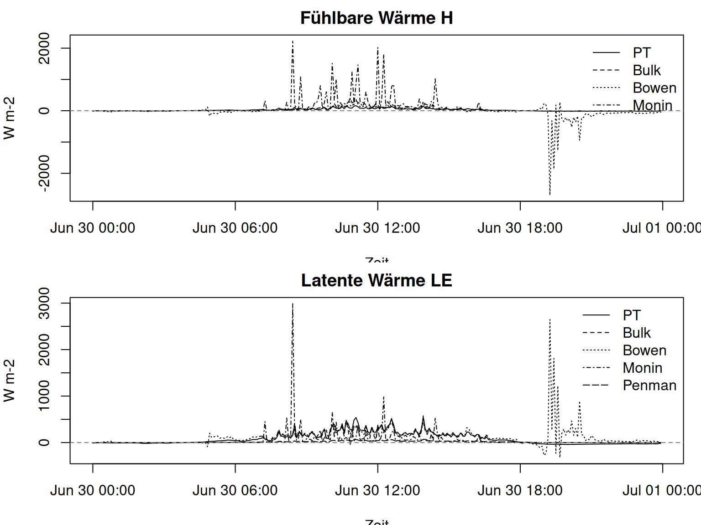
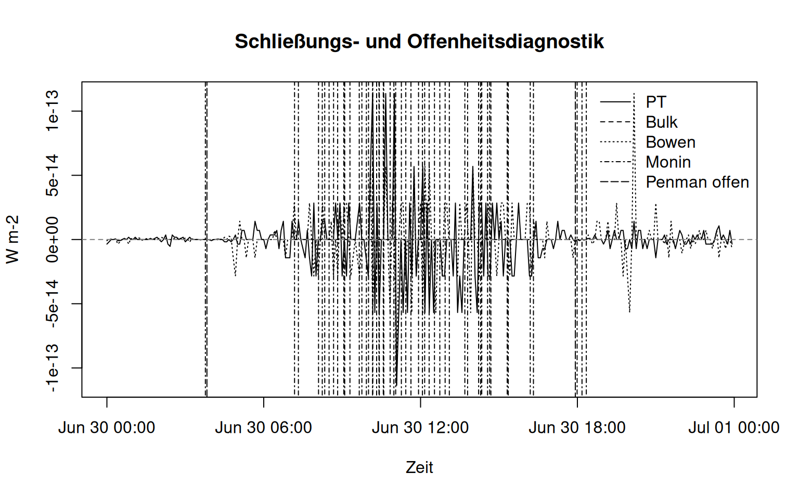

#> method ready missing_fields partial_fields
#> 1 priestley_taylor TRUE
#> 2 bulk_residual TRUE
#> 3 bulk_residual_ri_guard TRUE
#> 4 bowen TRUE
#> 5 monin_profile TRUE
#> 6 penman TRUE
#> notes
#> 1 Requires available measured input fields for temperature, net radiation, soil heat flux and surface type.
#> 2 Neutral bulk path can use v1 only; v2 is optional for mean wind.
#> 3 Optional Richardson guard requires v2 and remains unavailable when v2 is missing.
#> 4 Requires two-level temperature and humidity profiles.
#> 5 Requires profile inputs plus either surface_type or obs_height.
#> 6 Uses hum1 when present, otherwise rh; both are interpreted as relative humidity percent.Ziel dieser Kurseinheit
Diese Einheit ist die eigentliche Anwendungseinheit. Die Studierenden haben Energiebilanz, Geländeklima und Mikroklima bereits behandelt. Jetzt wird mit fieldClim entschieden, welche Wärmeflussmethode zu welcher Messarchitektur passt und wie die Ergebnisse gelesen werden dürfen.
Die Methoden werden nicht als Rangliste behandelt. Sie beantworten unterschiedliche Fragen. Priestley–Taylor partitioniert verfügbare Energie in Richtung Verdunstung. Bulk–Residual schätzt fühlbare Wärme aus einem Temperaturprofil und definiert latente Wärme als Rest. Bowen nutzt Temperatur- und Feuchtegradienten. Penman ist latentwärmeorientiert. Monin/Profile bleibt eine Profil- und Stabilitätsdiagnose.
HinweisArbeitsprinzip in R
Der Code bleibt absichtlich einfach. Wir verwenden read.csv(), direkte Spaltenzugriffe mit $, kleine data.frame()-Tabellen und base-R-Plots. Das Ziel ist nicht ein eleganter R-Stil, sondern eine nachvollziehbare Übersetzung von Stationsdaten in fieldClim-Berechnungen. Pfade laufen über here::here(). Wenn die Kursdatei data/caldern_wiese_2017-06-30.csv nicht vorhanden ist, nutzt der Code als Fallback die mit dem Paket ausgelieferte Beispieldatei.
Messarchitektur zuerst
Die Methodenwahl beginnt nicht bei einem Funktionsnamen, sondern bei der Messarchitektur. Eine Station mit nur einer Messhöhe kann verfügbare Energie und latentwärmeorientierte Abschätzungen liefern. Eine Station mit zwei Messhöhen kann zusätzlich Gradientenmethoden stützen. Ein Bestand oder Turm verlangt vorher die Entscheidung, welche Schicht überhaupt interpretiert wird.
Für den Caldern-Datensatz liegt eine Zwei-Höhen-Situation vor: Temperatur, Feuchte und Wind sind in 2 m und 10 m vorhanden. Deshalb können neben Priestley–Taylor und Penman auch Bulk–Residual, Bowen und Monin/Profile als Vergleichswege gerechnet werden. Genau dieser Vergleich ist der Zweck der Einheit.
Priestley–Taylor
Priestley–Taylor nutzt die verfügbare Energie und eine empirische Verdunstungsparametrisierung. Der Pfad ist hilfreich, wenn ein energiegebundener Vergleich benötigt wird, ohne sich sofort auf empfindliche Feuchte- oder Windgradienten zu stützen (Priestley und Taylor 1972).
\[ LE_\mathrm{PT} = \alpha_\mathrm{PT} \frac{s}{s + \gamma} (Q^* - B) \]
Das zugehörige H ist hier der Komplementärterm innerhalb der Partition. Es ist keine unabhängig aus einem Temperaturgradienten geschätzte fühlbare Wärme.
#> H_pt LE_pt sum_pt
#> Min. :-16.951 Min. :-40.12 Min. :-56.84
#> 1st Qu.: -5.597 1st Qu.:-12.14 1st Qu.:-17.75
#> Median : 13.043 Median : 33.77 Median : 47.75
#> Mean : 25.121 Mean : 83.57 Mean :108.69
#> 3rd Qu.: 49.373 3rd Qu.:163.40 3rd Qu.:210.15
#> Max. :159.944 Max. :541.61 Max. :698.25
Bulk–Residual mit Richardson-Guard
Bulk–Residual arbeitet anders. Zuerst wird fühlbare Wärme aus Temperaturgradient und Austauschannahme geschätzt. Danach wird latente Wärme als Rest der verfügbaren Energie definiert.
\[ H_\mathrm{bulk} = \rho c_p \frac{t_1 - t_2}{r_a} \]
\[ LE_\mathrm{res} = Q^* - B - H_\mathrm{bulk} \]
Diese Rechnung schließt formal, weil LE_res als Rest definiert ist. Die Schließung validiert aber nicht automatisch die Schätzung von H_bulk.
#>
#> neutral stable unstable very_stable
#> 1 5 107 175
#> H_bulk LE_bulk
#> Min. :-26.05 Min. :-45.32
#> 1st Qu.: 29.62 1st Qu.:119.99
#> Median : 72.36 Median :157.74
#> Mean : 90.89 Mean :188.72
#> 3rd Qu.:130.36 3rd Qu.:246.19
#> Max. :405.80 Max. :575.40
#> NAs :175 NAs :175
Der Guard ist keine Reparatur. Er verhindert, dass ein neutraler Bulk-Ansatz in sehr stabilen oder schwach konditionierten Situationen scheinbar robuste Werte liefert. Aus didaktischer Sicht ist genau das wichtig: Das Paket produziert nicht nur Zahlen, sondern markiert kritische Anwendungssituationen.
Voller Methodenvergleich
Im nächsten Schritt werden die Standardpfade gemeinsam berechnet. Der Code speichert die wichtigsten Ergebnisse in expliziten Spalten, damit sie mit einfachen base-R-Mitteln verglichen werden können.
#> method mean_H mean_LE
#> 1 Priestley--Taylor 25.1 83.6
#> 2 Bulk--Residual 90.9 188.7
#> 3 Bowen -21.1 129.8
#> 4 Monin/Profile 104.2 52.7
#> 5 Penman NA 13.2Vergleichsplots
Ein guter Methodenplot zeigt nicht zu viel auf einmal. Zuerst wird H verglichen, dann LE. Penman steht nur im zweiten Plot, weil dieser Pfad keine gekoppelte sensible Wärme berechnet.

Die Kurven sollen nicht als Wettrennen gelesen werden. Sie zeigen, wie unterschiedliche Annahmen dieselbe Messsituation in unterschiedliche Flussschätzungen übersetzen. Große Unterschiede sind nicht automatisch Fehler. Sie sind Hinweise darauf, dass Messdesign, Gradienten, Stabilität oder Residualdefinition eine starke Rolle spielen.
Schließung und Residualdiagnostik
Die Energiebilanzdiagnostik zeigt, wie die berechneten Flüsse zur verfügbaren Energie stehen. Formal geschlossene Methoden sind nicht automatisch physikalisch validiert. Das Schließungsverhalten beschreibt zunächst nur die interne Rechenlogik.
#> method mean_term
#> 1 PT 0.0
#> 2 Bulk 0.0
#> 3 Bowen 0.0
#> 4 Monin/Profile -48.2
#> 5 Penman open term 95.5
Für Priestley–Taylor, Bulk–Residual und Bowen kann die Nähe zur Nulllinie methodisch erwartbar sein, weil diese Pfade verfügbare Energie partitionieren oder Residuen definieren. Für Monin/Profile bleibt der Residualterm sichtbar und ist ein Diagnoseergebnis. Für Penman ist der offene Term nicht automatisch H, sondern die nicht aufgelöste Restenergie nach der latentwärmeorientierten Schätzung.
Paketdiagnostik nutzen
Wenn die installierte Paketversion die Closure-Funktionen bereitstellt, können dieselben Aussagen mit den Paketdiagnosen geprüft werden. Dieser Block bleibt bewusst klein und ergänzt die manuelle Kontrolle.
#> datetime method closure_type rad_bal soil_flux
#> 1 2017-06-30 00:00:00 priestley_taylor partition_closure -15.200 1.551533
#> 2 2017-06-30 00:05:00 priestley_taylor partition_closure -8.920 1.492695
#> 3 2017-06-30 00:10:00 priestley_taylor partition_closure -1.965 1.448708
#> 4 2017-06-30 00:15:00 priestley_taylor partition_closure -1.790 1.390439
#> 5 2017-06-30 00:20:00 priestley_taylor partition_closure -2.469 1.325316
#> 6 2017-06-30 00:25:00 priestley_taylor partition_closure -3.857 1.268762
#> available_energy sensible latent turbulent_sum closure_residual
#> 1 -16.751533 -5.301183 -11.450350 -16.751533 -3.552714e-15
#> 2 -10.412695 -3.308925 -7.103770 -10.412695 -1.776357e-15
#> 3 -3.413708 -1.084238 -2.329470 -3.413708 0.000000e+00
#> 4 -3.180439 -1.002820 -2.177619 -3.180439 0.000000e+00
#> 5 -3.794316 -1.189538 -2.604778 -3.794316 4.440892e-16
#> 6 -5.125762 -1.571959 -3.553803 -5.125762 -8.881784e-16
#> closure_ratio unresolved_complement status
#> 1 NA NA low_available_energy
#> 2 NA NA low_available_energy
#> 3 NA NA low_available_energy
#> 4 NA NA low_available_energy
#> 5 NA NA low_available_energy
#> 6 NA NA low_available_energyMethodenauswahl als Ergebnis
Die Auswahlregel ist einfach, aber streng. Eine Methode wird nicht gewählt, weil ihre Kurve glatter aussieht. Sie wird gewählt, weil Messarchitektur und Zielaussage zusammenpassen.
| Messarchitektur | Plausible Paketpfade | Vorsicht |
|---|---|---|
eine Messhöhe mit Q_star und B |
Priestley–Taylor, Penman, verfügbare Energie | keine direkte gradientenbasierte H-Schätzung |
| zwei Messhöhen mit Temperatur und Wind | Bulk–Residual, Stabilitätsprüfung | LE als Rest absorbiert Eingangs- und H-Fehler |
| zwei Messhöhen mit Temperatur und Feuchte | Bowen | schwache Feuchtegradienten können dominieren |
| zwei Messhöhen mit Temperatur, Feuchte und Wind | Monin/Profile als Diagnose | nicht force-closed, stark profil- und stabilitätssensitiv |
| Bestand oder Turm | zuerst Austauschschicht definieren | keine generische Flussdeutung ohne Schichtkontext |
TippArbeitsauftrag
Wählen Sie für den Caldern-Datensatz zwei Methoden aus und begründen Sie die Auswahl über Messarchitektur und Zielaussage. Vergleichen Sie nicht nur die Mittelwerte, sondern auch die Schließungsdiagnostik und die kritischen Stabilitätsfälle. Formulieren Sie am Ende einen Satz, der die Aussage fachlich begrenzt.
Literatur
Priestley, C. H. B., und R. J. Taylor. 1972. „On the assessment of surface heat flux and evaporation using large-scale parameters“. Monthly Weather Review 100 (2): 81–92. https://doi.org/10.1175/1520-0493(1972)100<0081:OTAOSH>2.3.CO;2.